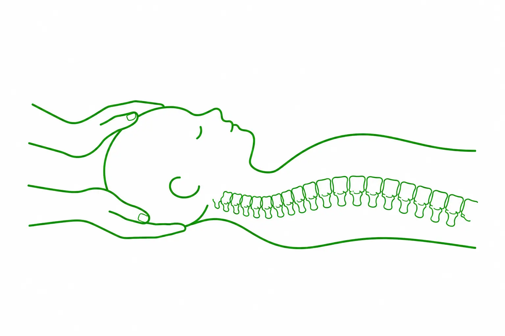

Terapia czaszkowo-krzyżowa Gdańsk
Terapia czaszkowo-krzyżowa, nazywana również terapią cranio-sacralną, polega na manipulacji i uciskaniu punktów znajdujących się w obrębie czaszki, przepony, klatki piersiowej, miednicy i kości krzyżowej. Stanowi terapię powięzi, czyli elastycznej tkanki łącznej, która otacza mięśnie i narządy oraz łączy ze sobą poszczególne struktury ciała.

Dzięki tej metodzie możliwe jest przywrócenie naturalnej równowagi ciała i umysłu, a także zmniejszenie różnych dolegliwości. W naszym ośrodku terapia czaszkowo-krzyżowa prowadzona jest przez doświadczonych specjalistów, którzy podchodzą do każdego pacjenta indywidualnie i dostosowują sposób pracy do jego aktualnych potrzeb.
Terapia czaszkowo-krzyżowa Gdańsk – wskazania
Dużą zaletą terapii czaszkowo-krzyżowej jest jej szerokie zastosowanie w pracy z różnego rodzaju dolegliwościami. Metoda ta może być wykorzystywana m.in. przy bólach głowy, dolegliwościach zatok, trudnościach związanych ze wzrokiem i słuchem, a także problemach w obrębie stawu skroniowo-żuchwowego, zgrzytaniu i zaciskaniu zębów czy dolegliwościach towarzyszących leczeniu ortodontycznemu. Wśród wskazań wymienia się również zaburzenia koncentracji, trudności ze snem, przewlekłe napięcie i doświadczenia traumatyczne. Terapia bywa także stosowana jako element wspomagający w przypadku niektórych zaburzeń neurologicznych i emocjonalnych, jednak zakres jej zastosowania zawsze powinien być oceniany indywidualnie, z uwzględnieniem stanu i potrzeb pacjenta.
Terapia czaszkowo-krzyżowa w Gdańsku – czy jest bezpieczna?
Terapia czaszkowo-krzyżowa w Gdańsku jest bezpieczną metodą, opartą na bardzo delikatnym dotyku i subtelnych technikach manualnych. Specjaliści z naszego Ośrodka Terapii FiLO wykonują ją z dużą precyzją i ostrożnością, uwzględniając indywidualny stan pacjenta. Przed rozpoczęciem terapii warto jednak poinformować specjalistę o chorobach, przyjmowanych lekach i innych istotnych kwestiach zdrowotnych, ponieważ istnieją sytuacje, w których jej zastosowanie może być niewskazane. Do przeciwwskazań zalicza się m.in. świeży zawał serca, tętniaka mózgu, jaskrę oraz zmiany zakrzepowe.
Terapia czaszkowo-krzyżowa Gdańsk – efekty
Terapia czaszkowo-krzyżowa w Gdańsku jest stosowana jako forma wspomagania organizmu w przypadku różnego rodzaju dolegliwości. W zależności od indywidualnej sytuacji pacjenta jej celem może być m.in. zmniejszenie odczuwanego bólu, redukcja obrzęków oraz poprawa komfortu ruchu. Delikatne techniki manualne wykorzystywane podczas terapii sprzyjają także odprężeniu i wyciszeniu, co bywa szczególnie istotne w przypadku migren, przemęczenia czy trudności z zasypianiem. Terapia może być również elementem kompleksowego podejścia do dobrostanu organizmu, obejmującego troskę o prawidłowe funkcjonowanie układu trawiennego, hormonalnego i odpornościowego.
Należy jednak mieć świadomość, że efekty terapii czaszkowo-krzyżowej w Gdańsku mogą być różne u poszczególnych osób i zależą m.in. od rodzaju oraz nasilenia dolegliwości, ogólnego stanu organizmu i indywidualnej reakcji na zastosowane techniki.
Terapia czaszkowo-krzyżowa Gdańsk – dlaczego my?
Wybierając terapię czaszkowo-krzyżową w naszym Ośrodku Terapii FiLO, można liczyć na profesjonalne podejście oraz przyjazną atmosferę. Nasi specjaliści są bardzo dobrze wyszkoleni, mają bogatą wiedzę i doświadczenie, które wykorzystują podczas pracy z pacjentami. Jednocześnie wykonują swój zawód z pasją i dużym zaangażowaniem, dlatego do każdego spotkania podchodzą z należytą uważnością. Łatwo nawiązują relacje z pacjentami i dbają o to, aby podczas terapii można było poczuć się swobodnie i komfortowo. Zależy nam na otwartej komunikacji, dlatego specjaliści chętnie odpowiadają na pytania oraz wyjaśniają wszelkie kwestie związane z przebiegiem terapii. Przed rozpoczęciem zabiegu można dowiedzieć się, na czym będzie on polegał, czego można się spodziewać oraz jakie techniki zostaną zastosowane. Taka forma współpracy pozwala lepiej zrozumieć cały proces i buduje atmosferę zaufania, która jest ważnym elementem każdego spotkania.
Potrzebujesz pomocy?
Nie wiesz, która metoda będzie odpowiednia dla Ciebie lub Twojego dziecka? Skonsultuj się z naszym zespołem i dobierz indywidualny plan terapii.
Umów wizytęObszary Metod
Terapie w Gdańsku
Specjalista ds. Fizjoterapii

mgr Olga Długozima
Fizjoterapia DorosłychNajczęściej zadawane pytania
Jak wygląda sesja, podczas której terapia czaszkowo-krzyżowa w
Gdańsku jest prowadzona u dorosłych?
+
Pacjent leży na plecach na stole terapeutycznym, w ubraniu, więc warto przyjść w wygodnym, luźnym stroju. Terapeuta delikatnie układa dłonie kolejno na głowie, karku, klatce piersiowej, miednicy i kości krzyżowej. Dotyk jest bardzo lekki i nie przypomina masażu. Wiele osób czuje w trakcie ciepło i głębokie rozluźnienie, a niektórzy zasypiają. Sesja, którą obejmuje terapia czaszkowo-krzyżowa w Gdańsku u dorosłych, trwa godzinę.
Czy terapia czaszkowo-krzyżowa w Gdańsku jest prowadzona także
u dzieci?
+
Tak. Terapia czaszkowo-krzyżowa w Gdańsku w Ośrodku FiLO jest dostępna również dla dzieci, a u najmłodszych bywa uzupełnieniem fizjoterapii dziecięcej. Sesja dla dziecka trwa 50 minut. Dotyk jest jeszcze delikatniejszy niż u dorosłych, a przebieg dopasowujemy do dziecka: nie musi ono cały czas leżeć nieruchomo. Rodzic jest przy dziecku przez całą sesję. O tym, czy ta metoda jest dla dziecka właściwa, decydujemy po rozmowie z rodzicami i ocenie dziecka.
Ile kosztuje terapia czaszkowo-krzyżowa w Gdańsku i ile sesji
potrzeba?
+
Sesja dla dorosłych trwa godzinę i kosztuje 200 zł. Sesja dla dzieci trwa 50 minut i kosztuje 180 zł. Liczbę spotkań ustalamy indywidualnie. Zależy ona od rodzaju i czasu trwania dolegliwości oraz od reakcji organizmu na terapię. Przy dolegliwościach przewlekłych zwykle planujemy serię kilku sesji, a po każdej omawiamy z pacjentem, co się zmieniło. Dzięki temu terapia czaszkowo-krzyżowa w Gdańsku trwa tyle, ile rzeczywiście potrzeba.